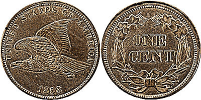

From today's featured article
The Flying Eagle cent is a one-cent piece that was struck by the Mint of the United States as a pattern coin in 1856, and released for circulation on May 25, 1857. The coin was designed by Mint Chief Engraver James B. Longacre, with the eagle in flight based on the work of Longacre's predecessor, Christian Gobrecht. By the early 1850s, the large cent in circulation (about the size of a half dollar) was becoming both unpopular in commerce and expensive to coin. After experimenting with various sizes and compositions, the Mint decided on an alloy of 88% copper and 12% nickel for a new, smaller cent. After the Mint produced patterns with an 1856 date and gave them to legislators and officials, Congress formally authorized the new piece in February 1857. It was issued in exchange for the worn Spanish colonial silver coin that had circulated in the U.S. until then, as well as for its larger predecessor. So many cents were issued that they choked commercial channels, especially as they were not legal tender and no one had to take them. The eagle design did not strike well, and was replaced in 1859 by Longacre's Indian Head cent. (Full article...)
Did you know...

Depiction of a miracleby Saint Zenobius
The Flying Eagle cent is a one-cent piece that was struck by the Mint of the United States as a pattern coin in 1856, and released for circulation on May 25, 1857. The coin was designed by Mint Chief Engraver James B. Longacre, with the eagle in flight based on the work of Longacre's predecessor, Christian Gobrecht. By the early 1850s, the large cent in circulation (about the size of a half dollar) was becoming both unpopular in commerce and expensive to coin. After experimenting with various sizes and compositions, the Mint decided on an alloy of 88% copper and 12% nickel for a new, smaller cent. After the Mint produced patterns with an 1856 date and gave them to legislators and officials, Congress formally authorized the new piece in February 1857. It was issued in exchange for the worn Spanish colonial silver coin that had circulated in the U.S. until then, as well as for its larger predecessor. So many cents were issued that they choked commercial channels, especially as they were not legal tender and no one had to take them. The eagle design did not strike well, and was replaced in 1859 by Longacre's Indian Head cent. (Full article...)
In the news

Rodrigo Duterte
The Flying Eagle cent is a one-cent piece that was struck by the Mint of the United States as a pattern coin in 1856, and released for circulation on May 25, 1857. The coin was designed by Mint Chief Engraver James B. Longacre, with the eagle in flight based on the work of Longacre's predecessor, Christian Gobrecht. By the early 1850s, the large cent in circulation (about the size of a half dollar) was becoming both unpopular in commerce and expensive to coin. After experimenting with various sizes and compositions, the Mint decided on an alloy of 88% copper and 12% nickel for a new, smaller cent. After the Mint produced patterns with an 1856 date and gave them to legislators and officials, Congress formally authorized the new piece in February 1857. It was issued in exchange for the worn Spanish colonial silver coin that had circulated in the U.S. until then, as well as for its larger predecessor. So many cents were issued that they choked commercial channels, especially as they were not legal tender and no one had to take them. The eagle design did not strike well, and was replaced in 1859 by Longacre's Indian Head cent. (Full article...)